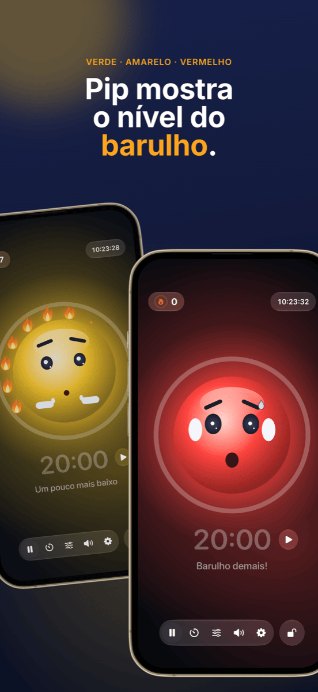

Gestão de sala de aula: mapa de sala, grupos e barulho sob controle
Uma boa gestão de sala de aula quase não aparece, e esse é justamente o objetivo: a aula flui, as transições funcionam e o tempo vai para a aprendizagem em vez de chamadas de atenção. Três perguntas voltam em quase toda aula: quem senta onde? Quem trabalha com quem? E quanto barulho está tudo bem agora? Este guia mostra um método que responde às três antes que virem problema.
O que gestão de sala de aula realmente significa
Gestão de sala de aula é mais do que disciplina. Já nos anos 1970, o psicólogo norte-americano Jacob Kounin mostrou que professores eficazes se diferenciam menos pela forma como reagem às interrupções e mais pela capacidade de preveni-las. Entre as características que ele descreveu:
- Onipresença: a turma percebe que você tem a sala inteira à vista.
- Fluidez e ritmo: as transições entre as fases não custam minutos, e a aula não perde o embalo.
- Mobilização do grupo: todos continuam envolvidos, não só quem foi chamado.
Muito disso é postura e experiência. Mas uma parte é simplesmente organização, e isso dá para preparar. É aí que entra o método a seguir.
Passo 1 · Uma vez sóCriar a lista da turma uma vez e usar em todo lugar
O maior desperdício de tempo é fazer tudo duas vezes. Exporte a lista da turma uma única vez como CSV do Excel, Numbers ou Planilhas Google. Tanto o Platzwahl quanto o Team Zufall importam esse arquivo diretamente, e a turma inteira fica pronta em segundos. Os dois apps salvam os nomes apenas no aparelho, sem conta e sem nuvem. Com dados de alunos, isso não é detalhe, é requisito.
Passo 2 · A baseO mapa de sala: prevenir problemas antes que aconteçam
O mapa de sala é a ferramenta de gestão mais eficaz, porque age a cada minuto sem que você precise dizer nada. Quem senta ao lado de quem decide conversas paralelas, distração e concentração. O que funciona:
- Separar alunos agitados, não só lado a lado, mas também um atrás do outro.
- Usar a proximidade: quem precisa de apoio ou se distrai fácil senta no seu campo de visão direto.
- Distribuir âncoras tranquilas entre os alunos mais agitados.
- Trocar com regularidade, por exemplo depois das férias ou todo mês, para não formar cantinhos problemáticos.
No Platzwahl você define essas regras por aluno (tendência a atrapalhar, lugar na frente, vizinhos desejados, separações) e o mapa é calculado automaticamente. Uma pontuação mostra o quanto todas as regras foram atendidas. O mapa pronto vai para a sua mesa em PDF.
 Passo 3 · Fases cooperativas
Passo 3 · Fases cooperativas
Grupos justos, sem discussão
“Podemos escolher nossos grupos?” é a pergunta que derruba muitos trabalhos em grupo antes mesmo de começarem. A escolha livre leva tempo, reforça panelinhas e sempre deixa os mesmos de fora. A divisão planejada é justa, mas trabalhosa, e quase não compensa para dez minutos de trabalho em dupla.
Para as muitas fases curtas, o sorteio é a melhor solução: é rápido, ninguém se sente favorecido e a turma aprende a trabalhar com todo mundo. O importante é que o sorteio seja visível. Quando a turma vê os nomes se misturando no projetor, não há o que discutir.
No Team Zufall você escolhe o número de equipes, desmarca os ausentes com um toque e sorteia. As equipes podem ser projetadas na parede ou exportadas em PDF. Para projetos mais longos, em que certas combinações precisam ser evitadas, a divisão planejada continua sendo a melhor escolha.
 Passo 4 · Fase de trabalho
Passo 4 · Fase de trabalho
Tornar o barulho visível em vez de pedir silêncio o tempo todo
Trabalho em grupo é barulhento, e tudo bem. O problema começa quando ninguém sabe mais quanto é demais e você passa a aula dizendo “Psiu!”. Chamadas de atenção se desgastam rápido e interrompem justamente quem está concentrado.
Três coisas funcionam melhor:
- Combinar o volume: defina com a turma o que vale em cada fase. Sussurro no trabalho individual, voz de dupla no trabalho em grupo.
- Mostrar o volume: um semáforo do barulho no projetor dá à turma o retorno que, de outra forma, você teria que dar em voz alta.
- Recompensar o silêncio em vez de punir o barulho: se o semáforo só fica vermelho e tira alguma coisa, ele logo vira instrumento de pressão, e alguns alunos barulhentos viram o bode expiatório da turma. Funciona melhor uma meta em comum que a turma consiga alcançar.
É exatamente para isso que o Ruhe foi feito: um mascote mostra verde, amarelo ou vermelho, e enquanto houver calma, uma chama se acende depois da outra. Doze chamas formam uma coroa completa, e isso é comemorado. Você ajusta os limites do amarelo e do vermelho conforme a fase ou deixa o Ruhe se calibrar sozinho. Um timer mostra o tempo restante, a visualização para projetor coloca tudo em tamanho grande na parede e os controles ficam no seu iPad. O Ruhe só mede o volume; nada é gravado.

Passo 5 · FechamentoTornar as conquistas visíveis
No fim da aula, o que conta é o que deu certo. Uma coroa de chamas completa é um bom motivo para um elogio rápido à turma toda. E se hoje não deu certo, é uma chance de pensar juntos no porquê, sem procurar culpados. Problemas que se repetem em certas mesas são sinal de que está na hora de um novo mapa de sala.
Como fica uma aula com este método
| Fase | O que acontece | Ferramenta |
|---|---|---|
| Antes da aula | O mapa de sala está à vista, todos sabem onde sentar. Sem disputa por lugares. | Platzwahl |
| Abertura | Fase expositiva no mapa de sala fixo. | – |
| Transição | As equipes são sorteadas no projetor, os ausentes já estão desmarcados. | Team Zufall |
| Fase de trabalho | Semáforo do barulho e timer rodam no projetor, a turma junta chamas. | Ruhe |
| Fechamento | Volta aos lugares fixos, uma olhada rápida na coroa de chamas. | Ruhe |
Perguntas frequentes
O que significa gestão de sala de aula?
Gestão de sala de aula é tudo o que um professor faz para que o máximo possível do tempo de aula seja de fato tempo de aprendizagem: regras e rotinas, organização da sala e dos lugares, transições fluidas e um olhar sobre a turma toda. Trata-se menos de reagir às interrupções e mais de evitar que elas aconteçam.
O que ajuda quando a turma está sempre barulhenta demais?
Primeiro, combinar com a turma qual volume é permitido em cada fase. Depois, tornar o volume visível em vez de chamar a atenção o tempo todo, por exemplo com um semáforo do barulho no projetor. O mais eficaz é valorizar as fases tranquilas em vez de apenas punir o barulho.
Um semáforo do barulho na sala de aula faz sentido?
Sim, se for usado como meta em comum e não como instrumento de punição. Os limites devem combinar com a fase: trabalho em grupo pode ser mais barulhento que trabalho individual. Um semáforo que recompensa o silêncio em vez de punir o barulho evita que alguns alunos barulhentos virem o bode expiatório da turma.
É melhor formar grupos por sorteio ou de forma planejada?
Os dois têm seu lugar. Para fases curtas e frequentes em dupla ou grupo, o sorteio é ideal: rápido, justo e sem discussão sobre quem fica com quem. Para projetos longos ou combinações delicadas, vale a pena planejar a divisão. Já o mapa de sala deve sempre ser planejado com cuidado.